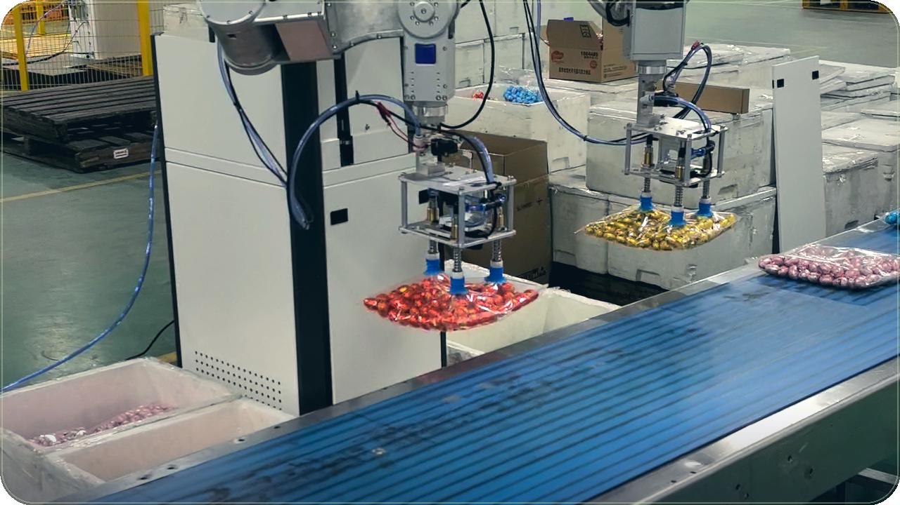

← 返回作品
Project
双臂机器人工厂上下料
· BV1NobG69E3H

循环画面是这条视频封面的缓慢推移。完整录像在 Bilibili。这条帖子没有文字简介。
问题
视频标题是「双臂机器人工厂上下料」。帖子没有另写问题说明，所以这里只按标题来理解：用双臂机器人做工厂里的上下料。
方法
标题和简介都没有写感知、抓取或规划用了什么方法。简介本身是空的。
同一天还有一条「双臂机器人移动抓取送货」，简介写的是机械臂视觉规控加上小车自主导航的分层架构。那是另一条视频，方法不能算到这条上下料上。
结果
这条视频没有附带数量结果。页面上的循环只来自封面。手臂具体做了什么，以 Bilibili 原片为准。